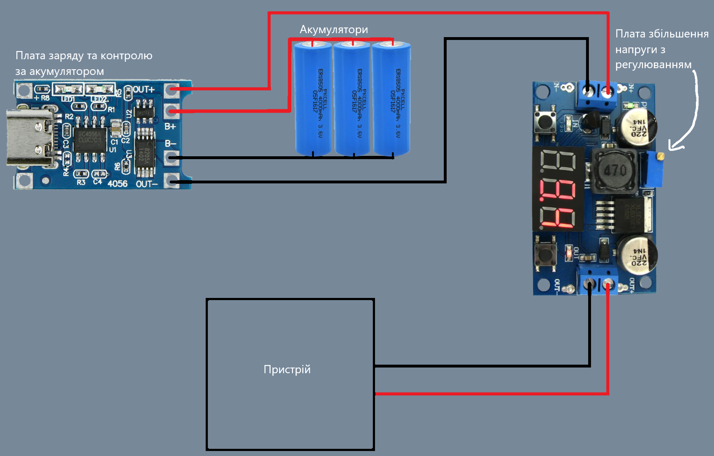

Для роботи вам будуть потрібні такі речі:
1. Паяльник
2. Дріт червоного та чорного кольору
3. Паяльне олово та флюс
4. Виключатель (не обов'язково)
5. Уважність щоб не спалити хату
 Спочатку потрібно розібратись де у акумуляторів плюсовий та мінусовий контакти, після чого взяти два дроти різних кольорів та припаяти вздовж до відповідних контактів (червоний до плюсів, чорний до мінусів) так щоб получилася батарея, після цього обов'язково заізолюйте контакти до наступного кроку щоб не сталося прямого замикання.
Спочатку потрібно розібратись де у акумуляторів плюсовий та мінусовий контакти, після чого взяти два дроти різних кольорів та припаяти вздовж до відповідних контактів (червоний до плюсів, чорний до мінусів) так щоб получилася батарея, після цього обов'язково заізолюйте контакти до наступного кроку щоб не сталося прямого замикання.
 Нам потрібно припаяти червоний дріт до контакту на платі що називається battery +, а чорний до контакту battery -.
Нам потрібно припаяти червоний дріт до контакту на платі що називається battery +, а чорний до контакту battery -.
Потрібно перевірити чи усе ми зробили правильно: ставимо наш блок на зарядку вашого мобільного телефону, і чекаємо поки лампочка загориться синім (в даному випадку акумулятори робочі та повністю заряджені що дозволяє нам продовжувати роботу).
 Беремо ще два відрізки дроту різних кольорів та паяємо їх за раніше описаним принципом до контактів out + та out -. Після чого є два варіанти або припаяти їх до плати підвищення напруги або затиснути їх в клеми(підключаємо усе зі сторони in + та in -)
Беремо ще два відрізки дроту різних кольорів та паяємо їх за раніше описаним принципом до контактів out + та out -. Після чого є два варіанти або припаяти їх до плати підвищення напруги або затиснути їх в клеми(підключаємо усе зі сторони in + та in -)
 Залишається лише налаштувати вихідну напругу в залежності від пристрою. Робимо це за допомогою гвинтика на який вказує стрілка, включаємо екран кнопкою та крутимо поки не найдемо підходяще(зарядка телефону 5V, LED стрічка - 12V, роутер 9V, це найпопулярніші значення, конкретно у вашого пристрою може бути інша напруга). Також можете добавити виключатель, щоб акумулятори не розряджались поки ви їх не використовуєте, його потрібно помістити на дріт між платою заряду та повишаючим модулем.
Якщо ви робите даний акумуляторний блок для конкретного використання схему можна спростити. Наприклад щоб заряджати телефон не потрфбно купляти такий масивний повишаючий модуль, варіант для такого буде у комплектуючих, також туди скину яскраві LED модулі якщо плануєте зробити потужний ліхтарик. Якщо хочете зробити акумулятор для роутеру вам буде потрібен дріт з конектором що для цього підходить.